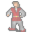

Myrelis¶Where to find Myrelis: Mt. Galmore: Galmore 58
{ .sprite }
| Type | NPC (can be spoken to; cannot be attacked) |
| Role | Starts You shall pass |
| Found in | Mt. Galmore |
| Entry ID | mg_myrelis |
| Introduced | v0.8.14 |
Quests¶
- Lost treasures: stage 35
- You shall pass: stage 10
- Galmore story flags (hidden flag): stage 10
Dialogue simulator¶
Set your quest stages and items, then talk to Myrelis. Same rules as the game: same checks, same options, same effects.
Rules verified against v0.8.18 game code (ConversationController.java) and dialogue data.
Dialogue (15 lines)
Exactly as in the game files. Each line appears once; links jump to where a choice leads.
mg_myrelis_selector (silent check: the first matching branch below is taken)
- branch 1 (if reached stage 9 of Galmore story flags (hidden flag)) → mg_myrelis_illusion_10
mg_myrelis_illusion_10 Myrelis: “So, what did you think of my work?”
- “What was that back there?” → mg_myrelis_illusion_what_was_that_20
- “You did that? How?” → mg_myrelis_illusion_you_did_that_10
- “Why did you build that here?” → mg_myrelis_illusion_why_build_that_10
- “We've already discussed it. Don't you remember?” (if reached stage 10 of Galmore story flags (hidden flag)) → mg_myrelis_vaelric_5
- “I was wondering, why are those barricades there? [pointing southwest]” (if latest stage of Lost treasures is 20; reached stage 3 of Undertell story flags (hidden flag)) → mg_myrelis_barricades_10
- “How do I get past those barricades?” (if latest stage of Lost treasures is 35; NOT reached stage 20 of You shall pass) → mg_myrelis_shannal_10
- “I am wondering if you could help me, I am looking for something.” (if latest stage of Lost treasures is 30) → mg_myrelis_undertell_10
mg_myrelis_illusion_what_was_that_20 Myrelis: “Ah, my finest creation! A scene to dazzle the senses, to remind even the most weary traveler of life's beauty. I call it "Tropical Bliss." But enough about what it is. What did it make you feel? Awe? Peace? Perhaps a longing for adventure?”
- “I liked it!” → conversation ends
- “You did that? How?” → mg_myrelis_illusion_you_did_that_10
mg_myrelis_illusion_you_did_that_10 Myrelis: “No, no, no. An artist never reveals the "how." The methods are nothing compared to the grandeur of the art itself. Let's not tarnish the magic by pulling back the curtain, shall we?”
- “Why did you build that here?” → mg_myrelis_illusion_why_build_that_10
mg_myrelis_illusion_why_build_that_10 Myrelis: “Let me tell you a little story. Long ago, I was an indentured servant, toiling away as a miner here in Galmore. This place was a prison to my spirit, a bleak and joyless pit. When I was freed, I swore I would transform it. I wanted to…”
- “I see. Thank you for telling me your story.” → conversation ends
- “Interesting! Very, but I have another question.” (if reached stage 10 of The swamp healer) → mg_myrelis_vaelric_10
mg_myrelis_vaelric_5 Myrelis: “Sorry. You see, ghosts sometimes have bad memories. Or is it just me? Anyway, if we already talked, then why are you back here?”
- “Do you know of Vaelric, the healer?” → mg_myrelis_vaelric_20
- “I'm wondering if you could help me? I'm looking for something.” (if latest stage of Lost treasures is 30) → mg_myrelis_undertell_10
mg_myrelis_barricades_10 Myrelis: “[With a terrified expression on his face] Oh those? Yeah, you don't want to go past those. Past them is the entrance to Undertell.” — effects: sets stage 35 of Lost treasures
- “Oh, that's how to get to Undertell?! How do I get past those barricades?” → mg_myrelis_shannal_10
mg_myrelis_shannal_10 Myrelis: “To enter Undertell, you need to talk to my friend Shannal, she has just come to spend a day at the beach. Shannal is the guardian ghost who controls passage to Undertell. Only she can remove (and put back) the barriers you see now.” — effects: sets stage 10 of You shall pass, spawns monsters on mt_galmore_railhouse
- “You, Shannal, maybe other ghosts, you all sure can affect the world of the living. Why does Shannal control the…” → mg_myrelis_shannal_20
mg_myrelis_undertell_10 Myrelis: “What is it?”
- “I'm looking for some place called "Undertell", do you know where it is?” → mg_myrelis_undertell_20
- “I'm looking for my brother. His name is Andor and he looks a lot like me.” → mg_myrelis_andor
mg_myrelis_vaelric_10 Myrelis: “Sure, ask away.” — effects: sets stage 10 of Galmore story flags (hidden flag)
- “Do you know of Vaelric, the healer?” → mg_myrelis_vaelric_20
mg_myrelis_vaelric_20 Myrelis: “Vaelric... Hmm, the name does tickle a memory, but I can't place it. I've heard whispers, perhaps, or seen his name scrawled in some dusty tome. Why do you ask? Is he another artist, or just someone you are curious about?”
- “Oh, never mind. I was just wondering.” → conversation ends
mg_myrelis_shannal_20 Myrelis: “She has seen horrors, as have the rest of us. It moved something inside her. When she came back as a ghost, that change gave her the ability to barricade the entrance, which she has. Go see her.”
- “Sounds good. Thank you.” → conversation ends
mg_myrelis_undertell_20 Dummy NPC: “With a terrified expression on his face, Myrelis slowly raises his arm and points you to the southwest.”
- Next → mg_myrelis_undertell_30
mg_myrelis_andor Myrelis: “No, I'm sorry, but you are the first human that I've seen in...geez, I can't even remember how long.”
mg_myrelis_undertell_30 Myrelis: “Over there, but it looks like it's blocked.” — effects: sets stage 35 of Lost treasures
- “How do I get past those barricades?” → mg_myrelis_shannal_10
Version history¶
| Version | Change |
|---|---|
| v0.8.14 | Added Dialogue: 12 lines added |
| v0.8.18 | Dialogue: 3 lines added, 3 lines changed |
Verified against v0.8.18 and every earlier release back to v0.7.0 (game data compared release by release).
Technical information
| Entry ID | mg_myrelis |
| Spawn group | mg_myrelis |
| Loot table | – |
| Conversation | mg_myrelis_selector |
| Faction | – |
| Movement | – |
| Icon | monsters_gisons:13 |
| Defined in | res/raw/monsterlist_mt_galmore2.json |
Raw data:
{
"id": "mg_myrelis",
"name": "Myrelis",
"iconID": "monsters_gisons:13",
"moveCost": 3,
"monsterClass": "humanoid",
"phraseID": "mg_myrelis_selector"
}
Community notes¶
Written by players, not generated from game data. Observations: what players notice in-game · Lore: the in-world story · Trivia: real-world facts, references, development history · Theory / speculation: unconfirmed ideas; may just be unfinished content
Observations¶
No notes yet. Contributions are welcome: add a note.
Lore¶
No notes yet. Contributions are welcome: add a note.
Trivia¶
No notes yet. Contributions are welcome: add a note.
Theory / speculation¶
No notes yet. Contributions are welcome: add a note.
Data from v0.8.18